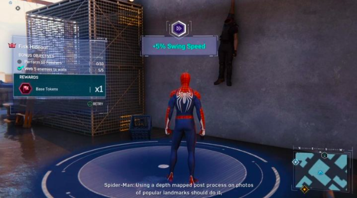
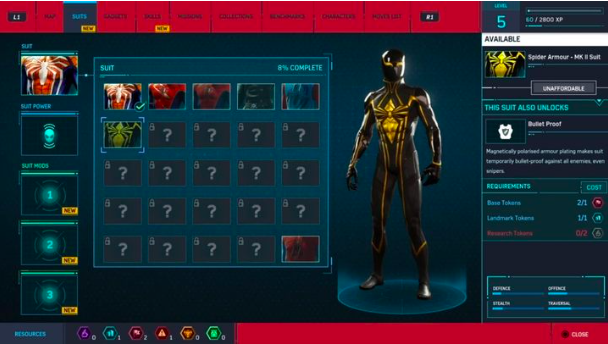
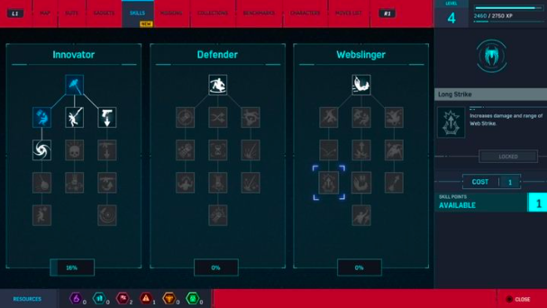
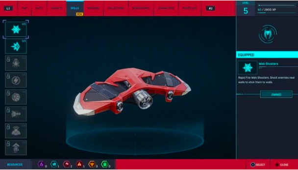
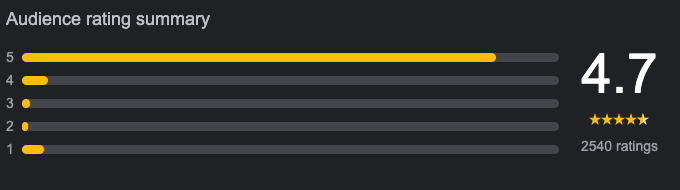

Introduction
The game follows Peter Parker, a 23-year-old college graduate and research assistant who gained superhuman abilities after being bitten by a radioactive spider. Peter is in his eighth year of crime-fighting under his super heroic alter ego of Spider-Man, who has become highly experienced at this point, but struggles to balance his superhero and personal lives.
Gameplay
Spider-Man engages in a linear set of main story missions, begun once the player reaches its yellow icon on the map. Missions may make use of combat mechanics, require stealth either with Spider-Man or as Mary Jane or Miles, or involve completion of puzzles as Peter. Each mission advances the main story to the next stage, and certain advancements in the story unlock different objectives, such as new crimes against different organizations, or new types of citywide activities. Aside from the main story, the player can complete many other objectives throughout New York City. Side missions, signified by a blue map icon, allow the player to complete short objectives offered by non-player characters, with a reward of XP towards new levels. While traversing through each district, crimes with one of the different organizations (thugs, Inner Demons, escaped prisoners, and Sable International) will appear, marked by a red map marker, to be completed for Crime Tokens. Districts may also be home to bases for one of the organizations, to be completed for Base Tokens. Districts also hold replayable Taskmaster Challenges, involving combat, stealth, stopping bombs, and chasing spy drones, which are scored on speed, in which achieving a gold rating for speed wins a maximum of three Challenge Tokens. Research Stations in each district involve short missions often based on traversal mechanics, to win Research Tokens. Black Cat Stakeouts require Spider-Man to reach a camera and photograph a hidden cat figure in order to find Black Cat. Finally, each district contains several of Peter's backpacks to pick up, landmarks to photograph, and surveillance towers to piece together a full map. Completing all activities in a district earns a 100% completion for that district.
Character Progression
In Marvel's Spider-Man you have a lot of ways to develop your main character. On the following page you will find detailed information about the development of Peter's skills.
Let's start with Peter's development and what are the possibilities after he gains required amount of experience points to level up. With each promotion to a higher level, Spider-Man will earn skill points that you can use to buy new moves. Additionally, each time you level up - you receive a passive bonus to improve your character's movement speed, maximum health or concentration bar capacity. As you can guess, higher level equals stronger character.
Changing Suits

Marvel's Spider-Man creates a real treat for the fans of the Marvel universe and Peter Parker's adventures. As the game progresses, you will be able to create iconic suits, which debuted in the comics series. In addition to the visual qualities, some suits offer unique powers that e.g. add electrical attacks, or significantly increase the strength of your blows.
Modifications are also a great reinforcement of the character - in each costume you can modify up to three improvements. For example, these may increase regeneration rate, increase your rate of experience gained, and many other options.
Skills
Designers of the game made three skill trees of character development available to the players: Innovator, Defender, Webslinger - you can purchase and improve 34 skills in total. Some abilities unlock new blows or better dodge options, while others allow you to more easily overpower enemies. To purchase all the skills in the game, you need to unlock level 50.
Gadgets
Gadgets play a big role in combat. They're cleverly constructed by Peter. Some inventions stun enemies, others lift them into the air, or simply throw them away powerfully. All in all, you can use eight different inventions in the game: web shooters, impact webs, spider-drones, electric webs, web bombs, trip mines, concessive blasts, and suspension matrix. You will unlock the new gadgets as the plot progresses, but some of them will be optional for you to create.
Review
Spider-man ps4 has achieved truly feeling like a spider-man game in the eyes of millions with a amazing story, fun gameplay, spectacular swinging and so much more, with a score of 4.7 out of 5 this is truly a spider-man game.